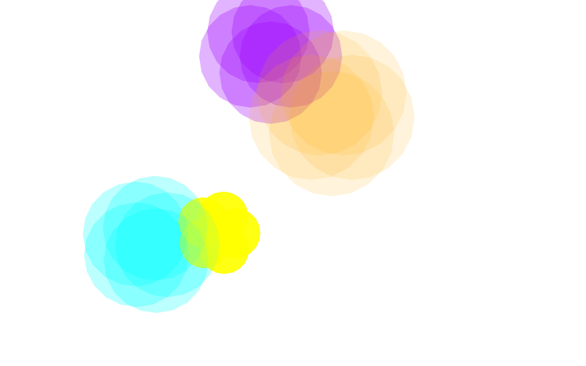

海老原沙英（エビハラサエ）・22歳・女
首都大学東京システムデザイン学部インダストリアルアートコース所属
映像制作サークル。3年次終了後に1年間休学しイギリスへ。
ターゲット
コンセプト
|
SNSと生活について考えるポスター。SNS映えに疲れた人へ。
写真には写せない、季節や感情の移り変わりの美しさを視覚化。
|  |  |
 |
話に花を咲かせる壁。声の視覚化によってコミュニケーションの促進。
スクリーンの前で会話することで、音の高さで異なる花が開く。

|
手に取った人と作品が対話ができるような写真集。最近ひとり暮らしを始めた人・癒しを求めている人へ。
寝ている「チャイ」の写真をめくると、こちらを振り向く写真のページが現れる。
所属していた映像制作サークルでの発表会の宣伝。何も知らない人へ。
学内での認知度を上げるために、テーマに合わせた興味がわくポスターを考案。
2020年東京オリンピックに向けたコンテンツ。初めて東京でオリンピックを迎える人へ。
自らが盛り上げていく、という意識を高める。
 |
 |
 |
 |
 |
 |
 |
所属サークルにおける映像発表会でのop･ed。これからサヨナラを迎える人へ。
終わりを迎える集団における、それぞれの記憶の存在を表現。
撫でることによってぽこちゃんからコメントがもらえるスマートフォンアプリ。ポコちゃんファンに向けて。
占いという遠い世界を、愛着の ある存在からのセリフによって私たちの世界へ。